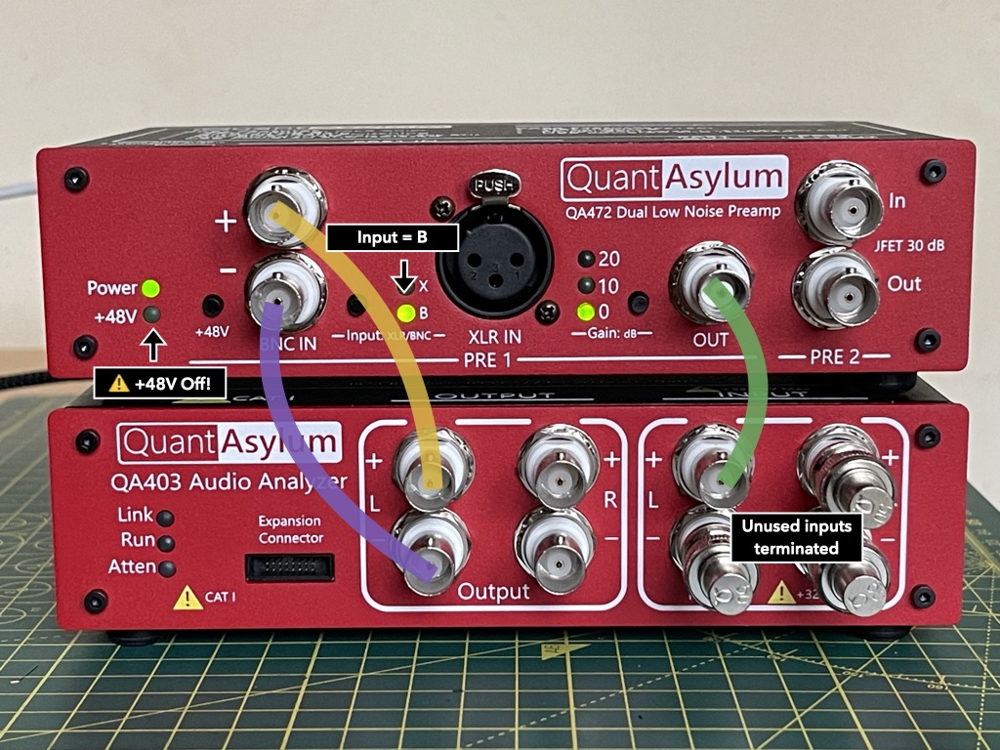
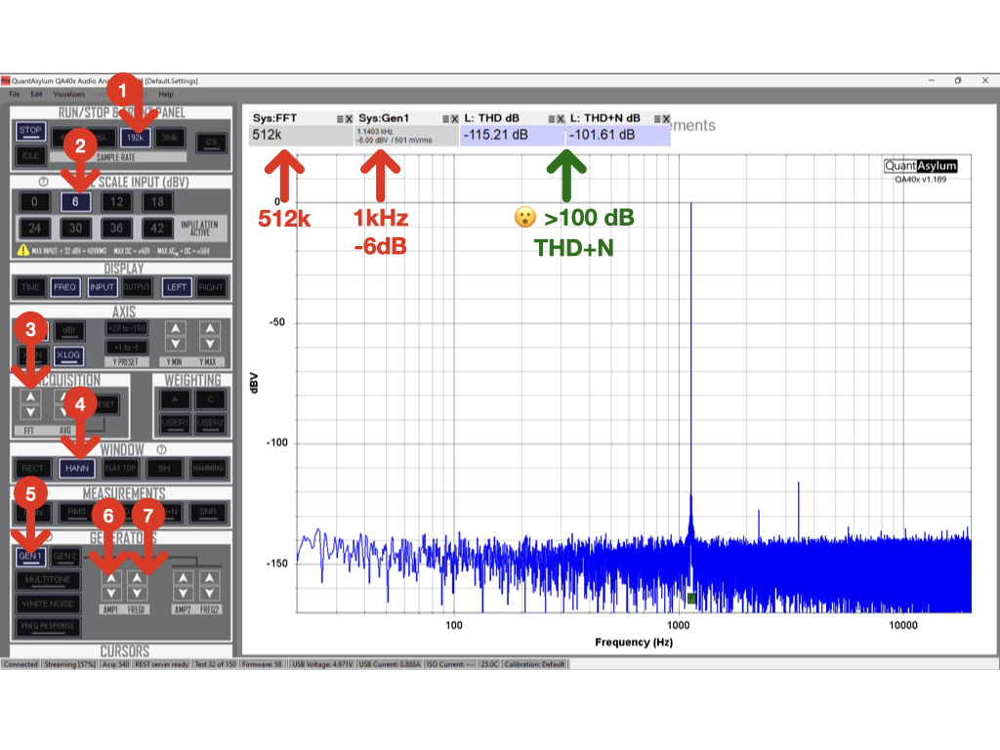

Measure the QA472 noise floor using the QA403
In this guide, we will measure the ultra-low-noise performance of the QA472 using the QA403 Audio Analyzer.
Power-up the devices
Power-up both devices by connecting them to your computer or USB hub. Verify that the power light is illuminated on both the QA472.
Connections between preamp and analyzer
Danger
Before making any connections, make sure that the +48V is turned off. This is above the ±40V DC rating of the QA403. Activating phantom power could damage your audio analyzer.

We are going to use the balanced outputs of the QA403 to generate a signal for the QA472 to amplify. The amplified signal will be returned to the QA403 single-ended input for analysis.
- +48V phantom power must be off before continuing.
- Enable the BNC input to preamp 1 by toggling the input button until the "B" LED is illuminated.
- Select 0 dB gain using the gain button.
-
Connect BNC connectors:
- Analyzer Ouput L+ to Preamp 1 BNC+ Input
- Analyzer Output L– to Preamp 1 BNC– Input
- Analyzer Input L+ to Preamp 1 BNC OUT
-
Connected BNC shorting caps on unused audio anaylzer inputs.
Using the QA40X software
You might want to experiment with different settings to see what works best for you. Here is a configuration I arrived at after a few minutes of playing around with different values to get the smallest THD + N value.

To replicate these settings, make sure the analyzer is not already running and follow these steps:
- Select a 192k sample rate
- Select a 6 dBV input scale
- Increase the FFT size to 512k samples.
- Pick a windowing function, in this case Hann.
- Select generator Gen1
- Change the amplitude of the signal to the largest value you can before distortion increases. For me, this was -6 dB.
- Set the frequency of the measurement; usually 1kHz is the standard option.
If you do not see the THD and THD+N measurement boxes above the plot, then above the generators panel, find the "measurements" panel and toggle the THD buttons; the measurement boxes should appear.